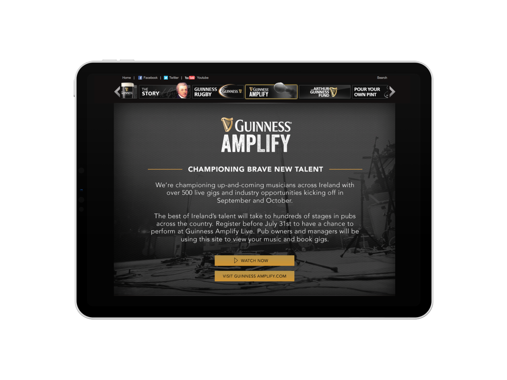
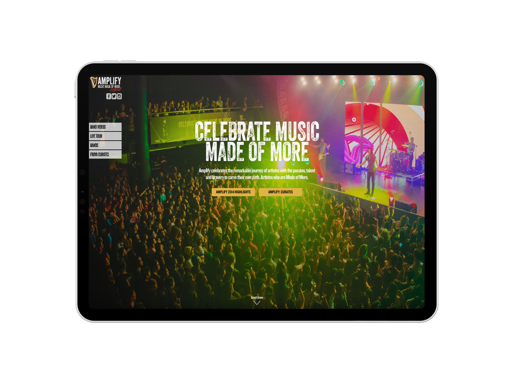
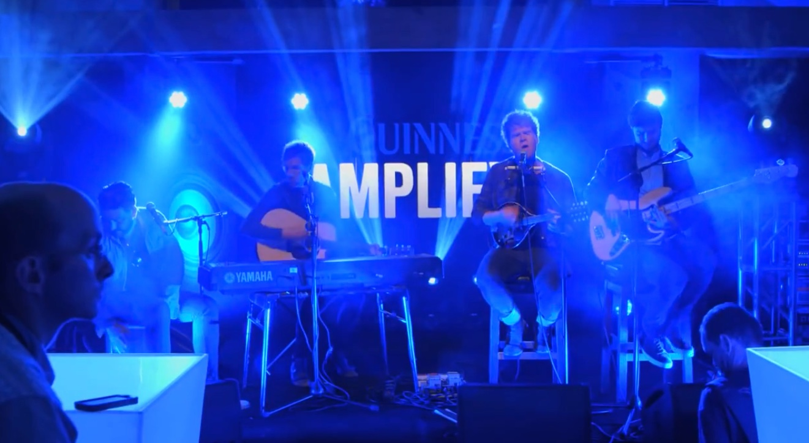
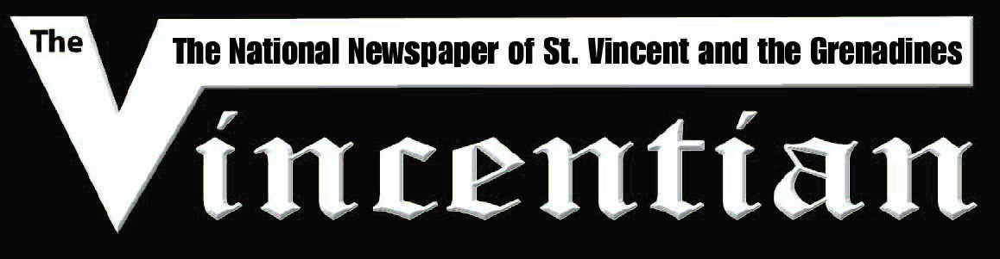

AMPLIFY
Creative Director
Momentum Worldwide


Manifesto film
Official Launch
FROM DUBLIN TO THE WORLD



"Day Devoted to Hoisting Guinness Starts to Leave a Bitter Taste"

"Guinness faces backlash in Ireland amid binge-drinking concerns"
"Guinness scraps Arthur's Day after five years, in favour of Amplify"
"Guinness scraps Arthur's Day for new music promotion"
"Arthur's Day celebrations scrapped from the home of the black stuff"
"Guinness Amplify Replaces Arthur Guinness Day"

THE CHALLENGE
Arthur's Day had become a liability. A fabricated holiday designed to sell stout had turned into a symbol of Ireland's drinking problem. Ambulance callouts spiked 30% every year. Hospital admissions for liver disease had doubled. Musicians wrote protest songs. Politicians called for boycotts. Five years in, the party was over.
THE INSIGHT
Guinness didn't need another excuse to drink. It needed a reason to listen. The brand had always been intertwined with Irish music — but Arthur's Day had drowned out the signal. What if we could flip the equation? Instead of music serving the brand, the brand could serve the music.
THE WORK
We killed Arthur's Day and built Guinness Amplify — a global music platform for emerging artists. 500 venues across Ireland. €1 million in funding. 60 days of free studio time. Masterclasses with industry experts. Surprise performances from Kodaline, Ellie Goulding, Hozier, Disclosure. The platform rolled out from Dublin to Malaysia to Singapore to the Caribbean.
THE IMPACT
We took a day known for binge drinking and turned it into a global stage for emerging voices. A Marshall stack for artists made of more. Featured in The New York Times, Financial Times, The Guardian, Irish Times, and Irish Independent. The platform that replaced the party.